Season 58 (2026-2027)
-
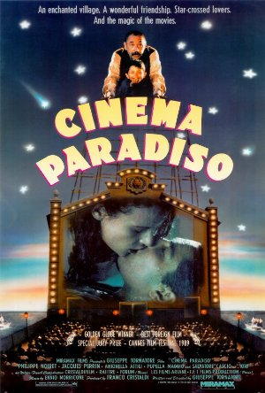
Directed by Giuseppe Tornatore; Starring Philippe Noiret, Enzo Cannavale, Antonella Attili
Lauded as one of the greatest films of all time, this Sicilian masterpiece won awards at Cannes in 1989, 1989 Best Foreign Film from both Golden Globe and Academy Awards among other accolades. The film follows Salvatore Di Vita, a famous film maker, as he pays tribute to a former mentor and remembers the beginnings of his love for film. The Cinema Paradiso was a wonderful arthouse theater from his formative years that now exists only in memory.
-
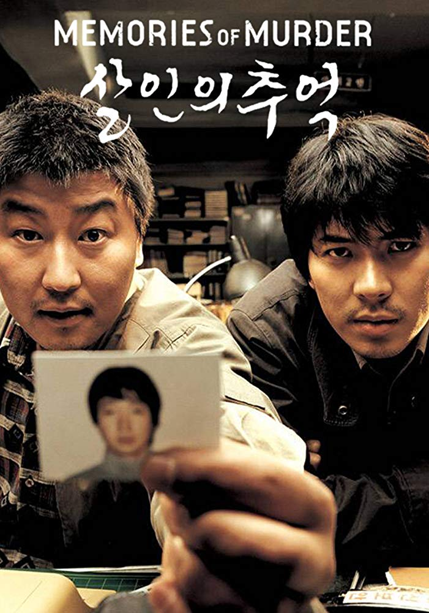
October 11, 2026Directed by Bong Joon Ho; Starring Song Kang-ho, Kim Sang-kyung, Kim Roe-ha
Memories of Murder (Salinui chueok)
Korea, 2003, 131 min, Color, Not Rated, Korean w/subtitles
Multi-category winner of 2003 Chunsa Film Art Awards, and Busan Film Critics Awards, Best Asian Film from 2003 Tokyo International Film Festival. Based on real life murderer Lee Choon-jae (though unsolved at the time of the film). The film follows an intense, frustrating, and ultimately unsuccessful police search for a rapist and murderer terrorizing Seoul. Deviating from a procedural law and order drama, Bong Joon Ho captures the both the laxity and arrogance of officials even as detectives are doggedly pursuing their suspects.
-
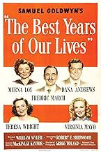
Directed by William Wyler; Starring Myrna Loy, Dana Andrews, Fredric March
Swept the 19th Academy Awards, winning seven categories and one of the first 25 films selected by the Library of Congress for preservation in the United States National Film Registry for being "culturally, historically, or aesthetically significant”. Best Years portrays the difficulties of a group of veterans as they reintegrate into post-World War 2 civilian life, the film is one of the first to raise issues of debilitating war injuries and what is now called PTSD.
Read Roger Ebert's review of Best Years of Our Lives, The at Great Movies. -
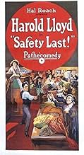
DECEMBER DOUBLE FEATURE!Directed by Fred Newmeyer, Sam Taylor; Starring Harold Lloyd, Mildred Davis, Bill Strother
December 13, 2026
Safety Last!
USA, 1923, 74 min, B&W, Not Rated, Silent w/intertitles
Iconic! Harold Lloyd is in good company among the other geniuses of silent film; Keaton and Chaplin. The Boy (Lloyd) leaves the small town for the big city to find success and marry the Girl. But he exaggerates his unimpressive job in letters home. Now the Boy must find success quickly, or at least create the illusion of it because the Girl has come to the city to join him. Impressive stunts to follow.
Read Roger Ebert's review of Safety Last! at Great Movies. -
DECEMBER DOUBLE FEATURE!Directed by Lois Weber; Starring Mary McLaren, Harry Griffith, Mattie Witting
December 13, 2026
Shoes
USA, 1916, 60 min, B&W, Not Rated, Silent w/intertitles
It’s a simple, time-worn story. Eva, a young shop clerk, lives in poverty and struggles to support her parents and siblings on her meager wages of $5 per week. Her desperate need for a new pair of shoes forces her to a difficult, heart-rending sacrifice. Based on writings by Jane Addams, renowned activist, reformer, social worker and sociologist who founded Hull House in Chicago, Shoes presents an activist’s view of the causes and effects of poverty in the days before women’s enfranchisement.
-
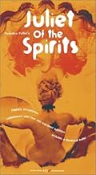
January 10, 2027Directed by Federico Fellini; Starring Giulietta Masina, Sandra Milo, Mario Pisu
Juliet of the Spirits (Giulietta degli spiriti)
Italy/France, 1965, 137 min, Color, Not Rated, Italian/French/Spanish w/subtitles
Winner of New York Film Critics Circle’s Best Foreign Film and Golden Globe’s Best Foreign Language Award. Juliet, dutiful wife goes through a spiritual awakening when she realizes that there is no happiness ever after she becomes aware of her husbands infidelity. She must rebuild herself and become truly independent for the first time in her adult life. Brilliant direction with radiant color and imagery.
Read Roger Ebert's review of Juliet of the Spirits (Giulietta degli spiriti) at Great Movies. -
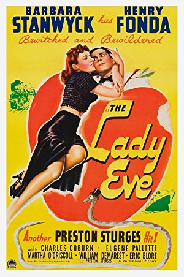
Directed by Preston Sturges; Starring Barbara Stanwyck, Henry Fonda, Charles Coburn, Eugene Pallette
14th Academy Award Nominated for Best Original Story and named to the top 1000 greatest movies of all time by the New York Times. When beautiful con artist puts a bumbling, bookish, unworldly bachelor in her crosshairs, a sexy comedy follows as the unlikely pair fall for each other. Fonda plays a great Charlie, but Stanwyck is stunning. This movie is all her.
Read Roger Ebert's review of The Lady Eve at Great Movies. -
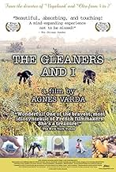
Directed by Agnès Varda; Starring François Wertheimer, Agnès Varda, Jean La Planche
An Official Selection of 2000 Cannes Film Festival, voted for Readers Choice edition of The New York Times in 2025. Gleaning is the act of gathering farm produce after the formal harvest. Varda’s unique and quirky outlook, along with her unquenchable curiosity brings a compelling story about a captivating culture. This is a film to be loved and enjoyed.
-
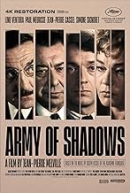
April 11, 2027Directed by Jean-Pierre Melville; Starring Lino Ventura, Paul Meurisse, Jean-Pierre Cassel, Simone Signoret
Army of Shadows (L'armée des ombres)
France/Italy, 1969, 145 min, Color, Not Rated, French/German w/subtitles
It is the consensus of renowned film critics, Ebert et al., that Army of Shadows belongs on the short list for great movies of all time, winning the 2006 New York Film Critics Circle award for Best Foreign Film of the Year - 37 years after its original release. The film follows a resistance cell in Lyon during WW2. Philippe Gerbier (Ventura) leads the band through heroic but at times morally dubious actions. A gripping tale of rebellion against oppression and the horrors of the reality of war.
Read Roger Ebert's review of Army of Shadows (L'armée des ombres) at Great Movies. -
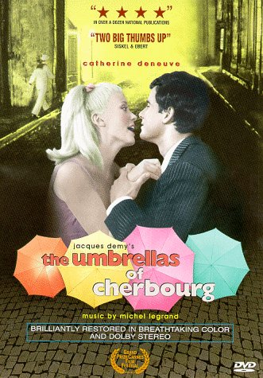
May 9, 2027Directed by Jacques Demy; Starring Catherine Deneuve, Nino Castelnuovo, Anne Vernon, Marc Michel
The Umbrellas of Cherbourg (Les parapluies de Cherbourg)
France/West Germany, 1964, 91 min, Color, Not Rated, French w/subtitles
37th Academy Awards nominee for Best Foreign Language Film and winner of the Golden Palm at the 1964 Cannes Film Festival. Departure, Absence and Return. This dramatic musical sings of loss and longing, of finding hope again. One’s future is not a consolation prize, it is a path towards finding personal redemption.
-
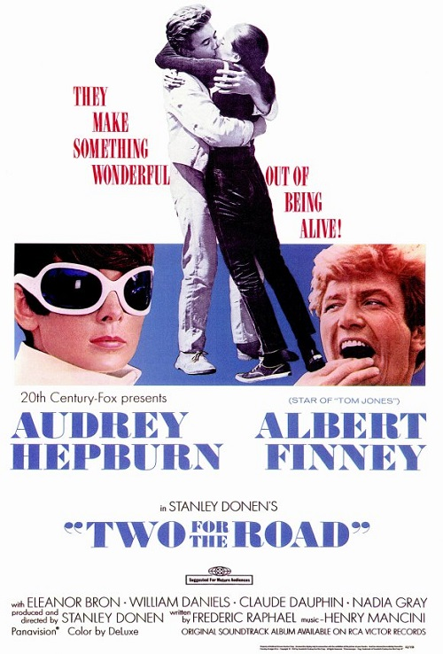
Directed by Stanley Donen; Starring Audrey Hepburn, Albert Finney, Eleanor Bron
1968 Golden Globe Award Nomination for Best Motion Picture Actress and Academy Award Nominee for Best Original Screenplay. A bitter-sweet road trip movie arranged in non-linear vignettes tells the story of couple’s relationship over twelve years. Amid beautiful European scenery, the ups and downs of love, the strains of marriage and a child, are equal parts sorrowful and loving.
-
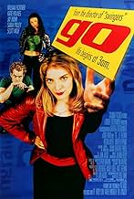
Directed by Doug Liman; Starring Sarah Polley, Jay Mohr, Scott Wolf
Clever and fast paced, Go tells a story showing the same event through the different viewpoints of the characters. The subject matter is a bit rough, with the buying and selling of drugs and such. But a multi-level marketing police detective, and a do or die cashier that’s determined to make her over-time shifts make the movie a very fun watch.
-
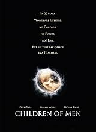
Directed by Alfonso Cuarón; Starring Julianne Moore, Clive Owen, Chiwetel Ejiofor
Academy Award winner for Best Adapted Screenplay, Best Cinematography, and Best Editing. In 2027 there is a global depression, civilization teeters on collapse, governments have transformed into totalitarian police states because of total human infertility. As factions vie for control amid spreading violence, a ray of hope appears when, for the first time in two decades, a young woman is pregnant. It is a dangerous time to be the future of humankind.